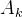
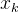
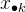
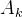
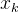
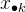
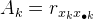
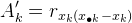

| テスト理論 |
| テスト理論 |
項目 の識別力は、項目得点と合計得点との相関係数で評価できる。 すなわち、
の識別力は、項目得点と合計得点との相関係数で評価できる。 すなわち、
|  | (20) |
である。 これを項目-全体相関、I-T相関1などと呼ぶ。 もし項目得点が正答（1点）-誤答（0点）の2値しか取らない場合でも、合計得点との相関係数を同様に計算することができる。 このように、一方の変数が2値である場合の相関係数を、点双列相関係数と呼ぶ。
項目数があまり大きくない場合、当該項目を合計得点の算出から取り除いて識別力を計算することもある。 つまり、この場合
|  | (21) |
である。
ある項目の得点が、テスト全体で測ろうとしている能力の高さを反映しているならば、項目-全体相関はある程度高い正の値を示すはずである。 そうでなければ、内容の異質な項目か正常に機能していない項目であることが疑われる。
Footnotes
| テスト理論 |